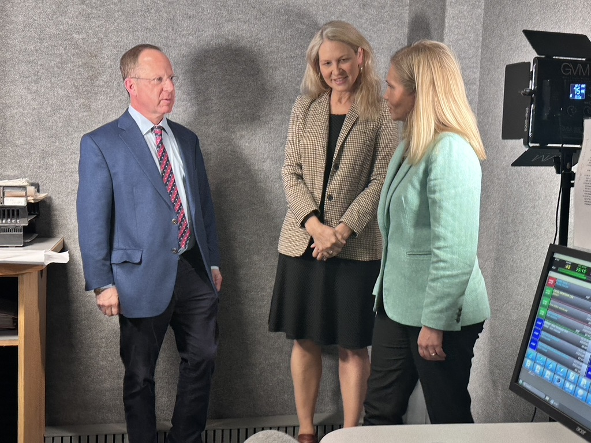

Lisa Belisle,
MD, PhD, MPH, MBA
Lisa Belisle works at the intersection of medicine and the human spirit, in the clinic, on the air, on the page, and in conversation with artists, healers, and thinkers who believe that how we live matters as much as how long we live. She is the founder and host of Radio Maine, creator of The Bountiful Path, and a board-certified family physician whose clinical practice integrates Western medicine with acupuncture and Five Phase theory. She lives and works off the coast of Maine.
Explore the work →

Asking to Be Lived
Lisa has presented at national medical conferences and cultural gatherings on the intersections of medicine, creativity, leadership, and seasonal wellbeing. Her talks draw on more than three decades of clinical experience, Five Phase theory, and the stories that emerge when medicine and art share a room.

Lisa Belisle is a board-certified family physician and preventive medicine specialist whose clinical work integrates Western medicine with acupuncture, Five Phase theory, mindfulness-based stress reduction, qigong, and herbalism. Across more than three decades of practice, she has understood health as something that unfolds within relationships, rhythms, and time.
Her career has never moved in a single direction. Alongside clinical practice, she has served in medical executive and advisory roles within health systems, founded and led her own practice, directed digital health initiatives, and taught in residency and medical education for more than a decade. Simultaneously, she built a parallel career in media, working as a wellness editor and editor in chief for a regional publication. These worlds have always informed each other. The result is a perspective on medicine, leadership, and creative life that is genuinely integrative, not as a philosophy but as a lived experience.
She is the founder and host of Radio Maine, a video podcast exploring creativity and the human spirit through conversations with artists, physicians, writers, and community leaders. She co-hosts A Healthy Conversation with Dr. Jeffrey Barkin, a radio show bringing medicine and its human dimensions into open dialogue. She publishes The Bountiful Path, a weekly Substack newsletter at the intersection of medicine, art, and seasonal wisdom.

A Healthy Conversation with Dr. Jeffrey Barkin, co-hosted by Dr. Lisa Belisle. Listen on WGAN →
She is a collaborator with The Portland Art Gallery in Portland, Maine, where the Radio Maine Live panel series and the Artful Escapes conversation series take place.

The Portland Art Gallery
She is working on a memoir, Daughter, Doctor, Mom, centered on her relationship with her late father, Charles Belisle, MD, a family physician who practiced for nearly fifty years at Maine Medical Center's Family Medicine Residency Program.
She and her husband have six children between them. They live on Littlejohn Island, off the coast of Maine.
Leadership and Management (HALM)